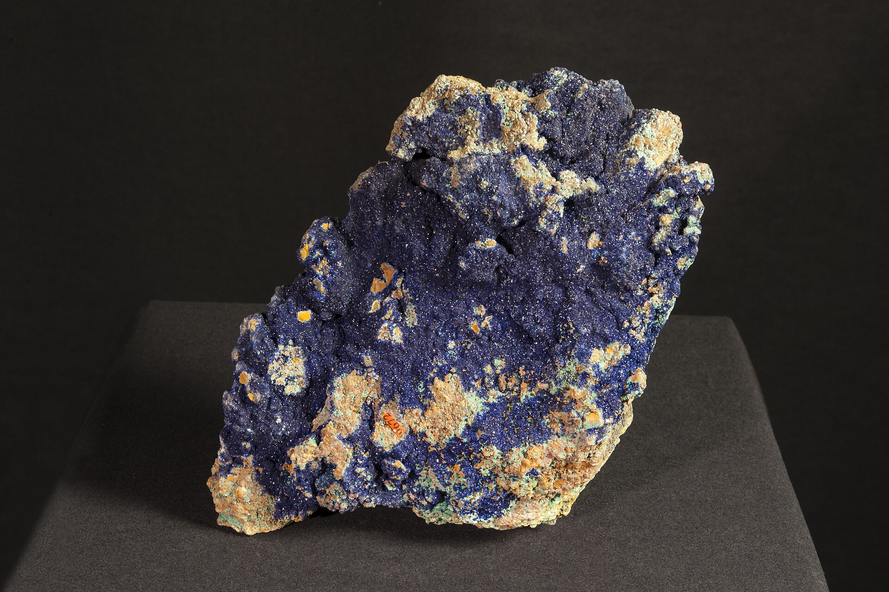

空山新雨后天气晚来秋
After fresh rain in the empty mountains,
the evening air turns autumnal.Project translation
the evening air turns autumnal.Project translation
TANG POETRY · A CURATORIAL TRANSLATION
山居秋暝
How does an apparently “empty” autumn mountain become a world in which one may remain?
Original digital illustration; a reading of the poem, not a reconstruction of Wang Wei’s landscape.The four couplets establish a world in sequence: weather, perception, human traces, and finally a choice. The six pauses below turn that verbal movement into a route through an original handscroll.
People and boats appear later. Here, “empty mountains” first names a quiet, spacious condition of perception.
B · RECEIVED READINGThe pauses are not decorative scenes. They follow syntax, sensory order, and the four-couplet structure, creating an interpretation that can be inspected and questioned.
The poem clears away ordinary noise and establishes a cool, newly washed atmosphere.
The eye moves from pines above to stone below; still light answers flowing water.
Sound and movement arrive before their human causes. The mountain becomes lived space.
Description turns into judgement: why can an autumn mountain outweigh spring flowers?
The first three couplets ask what is present in the mountain; the last asks why one might stay. These three objects clarify the closing allusion, Wang Wei’s recurring techniques, and the later history of reading his poetry through painting.
“王孙兮归来，山中兮不可以久留。”Why here: “The wanderer may remain” is often read as reversing an earlier call to return from the mountains. The echo turns landscape description into a decision.
Check the Chinese source text · not claimed as the poet’s only intention“返景入深林”
“深林人不知”Why here: A small same-author corpus shows Wang Wei repeatedly organising secluded space through light, sound, and slight human presence.
Deer Enclosure · Bamboo Lodge“味摩诘之诗，诗中有画。”Why here: Su Shi’s exchange between poetry and painting shaped later reception. This digital handscroll extends that history; it does not claim to recover Wang Wei’s own visual plan.
Check Su Shi’s text · a Northern Song reception, not Tang authorial intentThe pigments and the handscroll format are not evidence about Wang Wei’s original setting. They make our own act of translation visible: verbal sequence becomes spatial sequence, and reading becomes paced viewing.

M-01Material reference · AzuriteNaturalis Biodiversity Center · CC0
CONCEPTUAL COLOUR-LAYER STUDY
Not a reconstruction of any universal historical process
CURATORIAL COLOPHON
This page does not reconstruct a landscape once seen by Wang Wei. Its original illustration translates the poem’s sensory order into a navigable digital space, while each interpretive claim remains labelled by evidence type.

What remains is not an uninhabited view, but a world where sharpened perception, human traces, and natural sounds coexist without displacing one another.
Return to the scroll head ↑